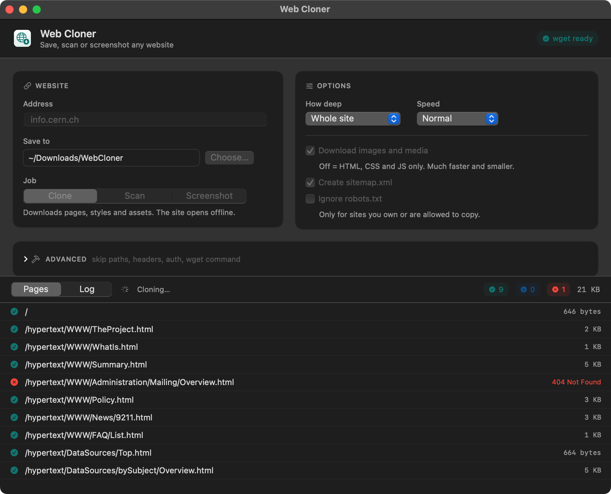

Keep the whole website, not a pile of tabs.
Web Cloner copies a site to your Mac so it opens offline, links and images included. Point it at an address and watch every page land.
Version 1.2.0, free and MIT licensed
macOS 13 and later, Intel and Apple Silicon
Three jobs, one window
Pick what you want from a site. The pages arrive in a list as they finish, with sizes and failures in plain sight.
Clone
Pages, stylesheets, scripts and images, with every link rewritten to the local copy.
├── index.html
├── about.html
├── work/slate.html
└── assets/site.css, hero.jpg, plex.woff2
Scan
Walks the site without saving a byte and tells you what is there, including the links that are broken.
<url><loc>https://example.studio/</loc></url>
<url><loc>https://example.studio/about</loc></url>
404 /legacy/mailing-list
</urlset>
Screenshot
A full-page PNG of every page it finds, rendered in a real browser engine at the width you choose.
├── example.studio-home.png 1440 × 5120
├── example.studio-about.png 1440 × 3860
└── example.studio-work.png 1440 × 4400
The images other cloners leave behind
Most sites serve their pictures and fonts from a separate domain, and some write them in a way plain wget reads as a broken path. Web Cloner finishes the job: it reads the saved pages, fetches what is still missing and points every reference at the local file.
404 cdn.example.net/hero.jpg
404 cdn.example.net/team.jpg
background-image: url("https://cdn…")
ok cdn.example.net/hero.jpg
ok cdn.example.net/team.jpg
background-image: url(../cdn.example.net/hero.jpg)
Say exactly what to leave out
Open Advanced and the app stops guessing. Skip a section, drop every PDF, carry a session cookie, cap the download. Each field is one wget flag, and an empty field changes nothing.
| Field | What it means | Flag |
|---|---|---|
| Skip these paths | Leave out /blog and /admin | --exclude-directories |
| Only these paths | Clone one section, nothing else | --include-directories |
| Skip URLs matching | A regular expression, tested against the full URL | --reject-regex |
| Skip file types | pdf, zip, mp4 | --reject |
| Also allow domains | Crawl an extra asset domain alongside the site | --span-hosts |
| Stop after | A hard cap in megabytes | --quota |
| Extra headers | One per line, for a logged-in copy | --header |
| HTTP user and password | Basic auth | --user, --password |
| Keep original links | Leaves the HTML exactly as served | drops --convert-links |
| Ignore SSL errors | For a staging box with a bad certificate | --no-check-certificate |

Running in a minute
-
Open the disk image
Drag Web Cloner onto Applications. If macOS blocks the first launch, right-click the app and choose Open.
-
Let it fetch wget
The app runs on
wget. If you do not have it, a Setup card installs it for you through Homebrew. -
Forget about updates
Every launch it checks this repository for a new release and offers to replace itself. Nothing to download, nothing to delete.
Questions people ask
Is it really free?
Yes. MIT licensed, no account, no telemetry, no paid tier. The whole source is on GitHub and you can build it yourself with the Xcode command line tools.
Does it work on JavaScript-heavy sites?
wget does not run JavaScript, so a site that renders entirely in the browser gives you its shell. Use the Screenshot job for those: it renders each page in WebKit, the same engine as Safari.
Will it get me blocked?
Set Speed to Polite and the app waits between requests and caps its rate. Robots rules are respected unless you turn that off yourself, which you should only do on sites you own or have permission to copy.
Intel or Apple Silicon?
Both. One universal build, native on each, no Rosetta.
Is this an HTTrack alternative?
Same job, different shape. Native macOS window, a live page list instead of a log to decode, a sitemap after every run, screenshots built in, and the CDN repair pass that keeps offline copies from losing their images.
Take a copy while it is still up
Sites disappear. A clone on your own disk does not.